Every game, explained
Read the rules before you sit
Fifteen card and domino games in one client — Hold'em, Omaha, Capsa, Ceme, Domino, Baccarat, Blackjack and the rest. Each one written out step by step, in the order you will meet it.
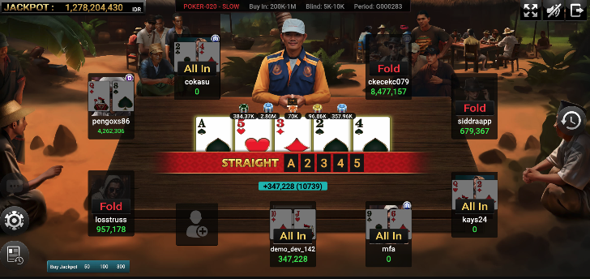
The full card
Numbered as they appear in the lobby. Every tile opens the rules.
-
01
Cards
Texas Hold'em
Two hole cards, five on the board, four betting rounds.
Read the rules → -
02
Cards
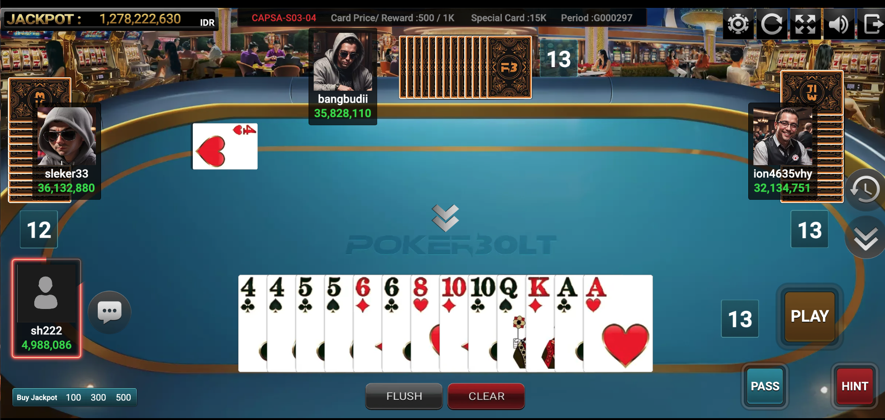
Capsa Banting
Shed all thirteen cards first. Big Two, four seats.
Read the rules → -
03
Cards
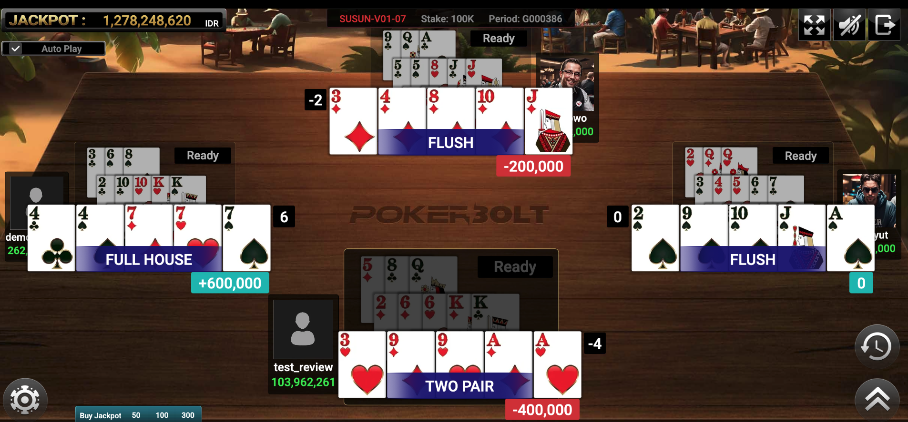
Capsa Susun
Arrange thirteen cards into three legal hands.
Read the rules → -
04
Table
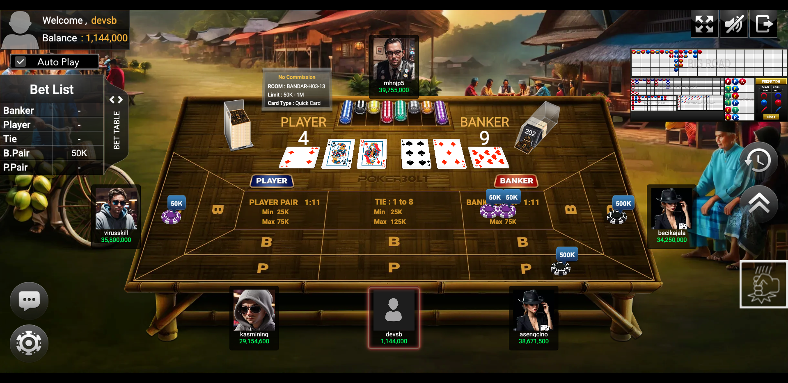
Baccarat
Back Player, Banker or Tie. Closest to nine wins.
Read the rules → -
05
Dominoes
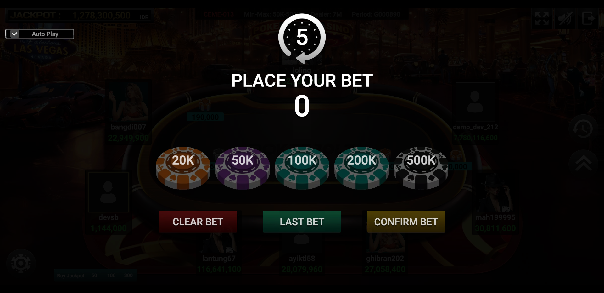
Ceme
Two dominoes against the dealer. Last digit is your score.
Read the rules → -
06
Dominoes
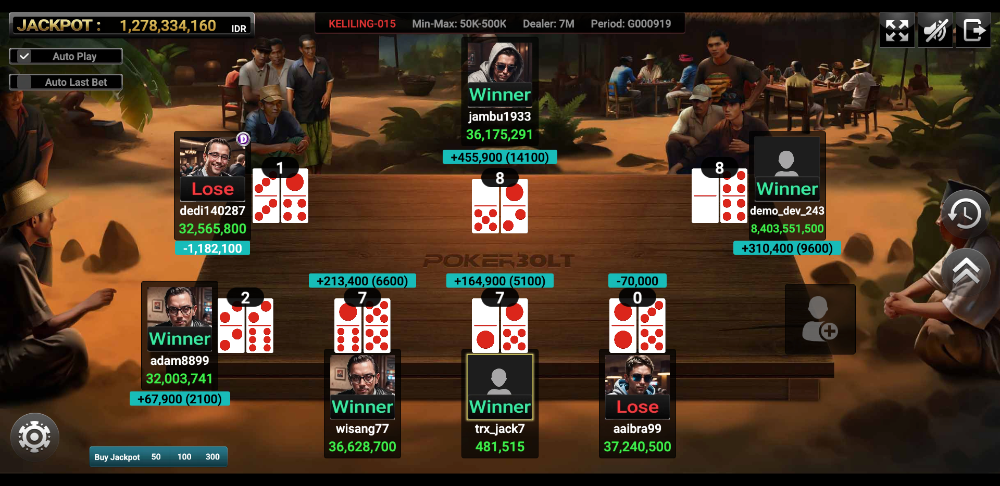
Ceme Keliling
Ceme with the dealer seat rotating around the table.
Read the rules → -
07
Cards
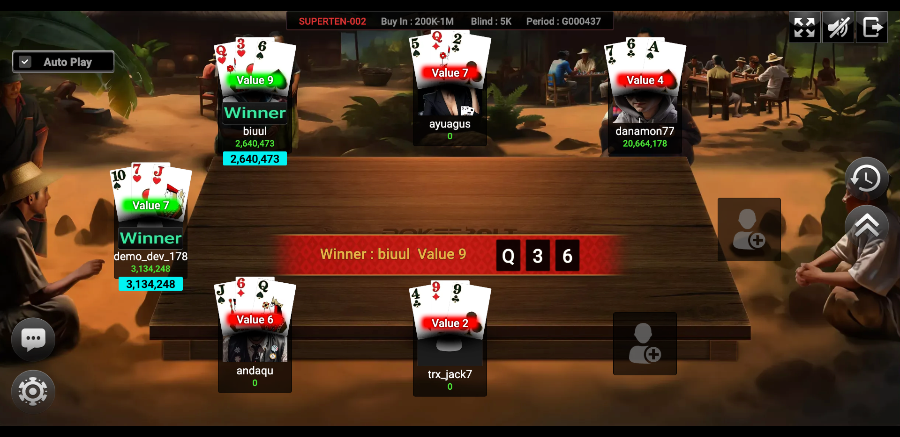
Super10
Three cards, pictures are worth ten, ten is the top score.
Read the rules → -
08
Cards
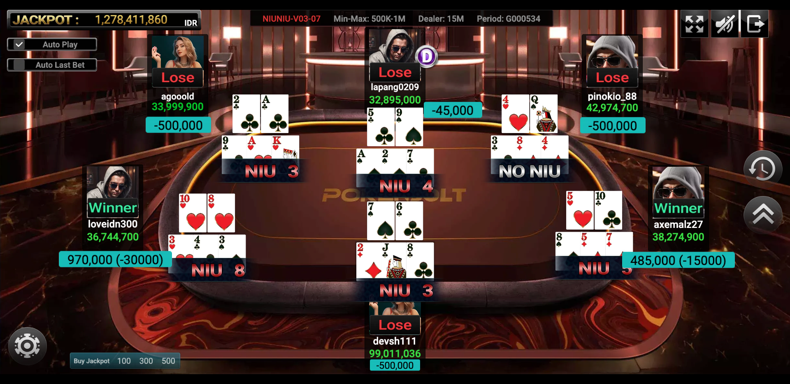
Niu Niu
Split five cards into a bull of three and a score of two.
Read the rules → -
09
Cards
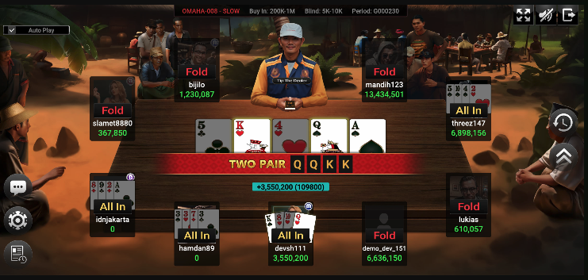
Omaha Poker
Four hole cards — use exactly two, plus three from the board.
Read the rules → -
10
Dominoes
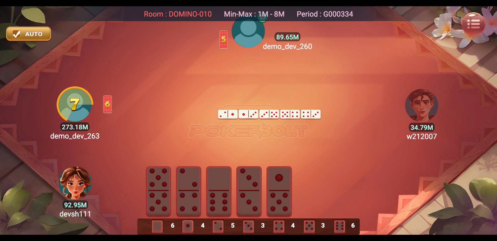
Domino Classic
Gaple. Match the open ends, empty your hand first.
Read the rules → -
11
Cards
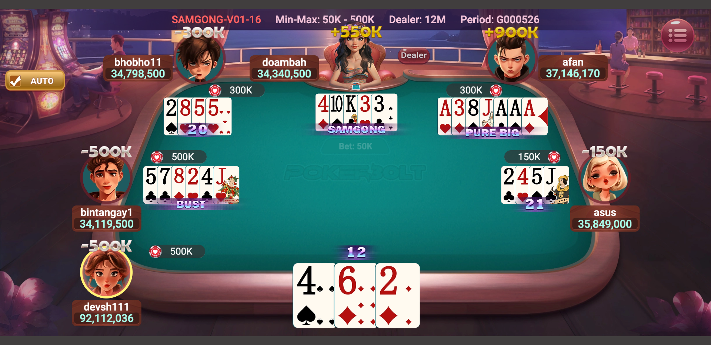
Samgong
Three cards against the dealer. Three pictures is the nuts.
Read the rules → -
12
Table
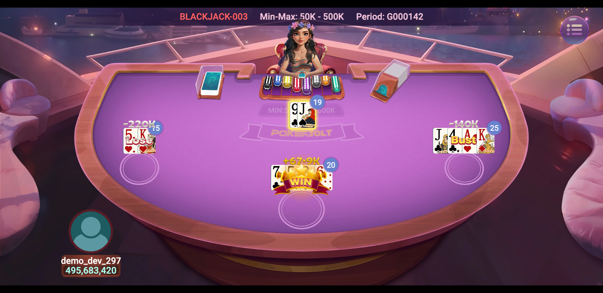
Blackjack
Beat the dealer to twenty-one without going bust.
Read the rules → -
13
Cards

Call Break
Bid your tricks, spades are trumps, five rounds.
Read the rules → -
14
Table
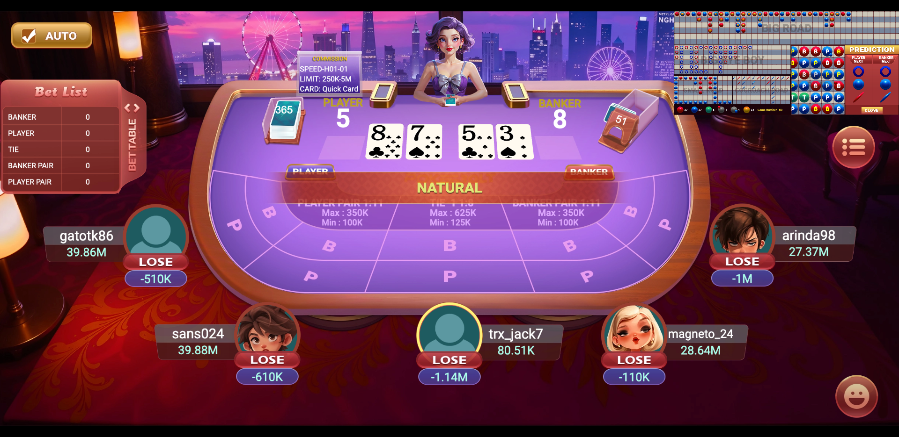
Speed Baccarat
Baccarat rules on a roughly half-minute round clock.
Read the rules → -
15
Cards
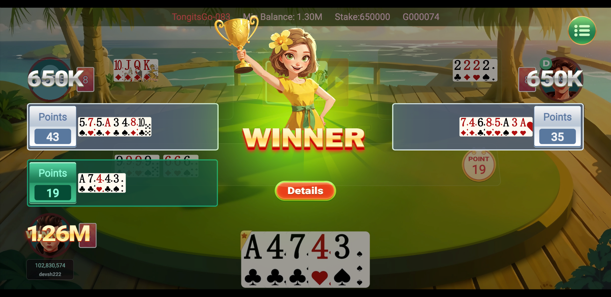
Tongits Go
Meld, discard, and go out before the other two seats.
Read the rules →
01 — Texas Hold'em
Two private cards, five in the middle. Best five of your seven takes the pot.
- Post the blinds Two seats left of the dealer button post the small and big blind. The buy-in and blind level are printed in the table header, for example Buy in 200K–1M, blind 5K–10K.
- Pre-flop Everyone gets two hole cards. Starting left of the big blind, each seat folds, calls or raises.
- Flop, turn, river Three community cards, then one, then one more — with a betting round after each. Check when nobody has bet; call, raise or fold when they have.
- Showdown The last aggressor shows first. The client names the winning hand on the table banner and pushes the pot.
-
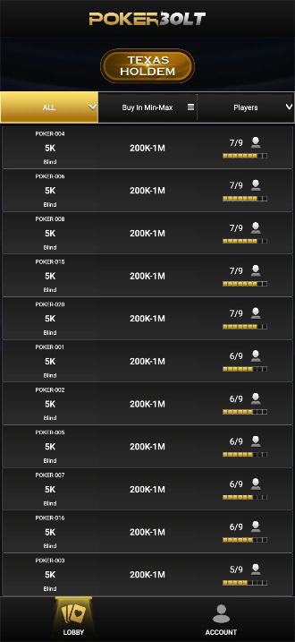
Fold, check and raise sit on the rail. -
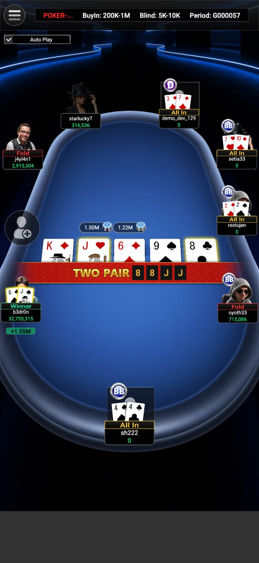
The banner names the winning hand.
Hand ranking
Strongest first. Shared by Hold'em, Omaha and Capsa Susun.
| Hand | Rank | Example |
|---|---|---|
| Royal flush | 1 | A K Q J 10, one suit |
| Straight flush | 2 | 9 8 7 6 5, one suit |
| Four of a kind | 3 | Q Q Q Q 7 |
| Full house | 4 | J J J 4 4 |
| Flush | 5 | K 10 8 5 2, one suit |
| Straight | 6 | 8 7 6 5 4, mixed suits |
| Three of a kind | 7 | 6 6 6 K 3 |
| Two pair | 8 | 10 10 5 5 A |
| One pair | 9 | A A 9 6 2 |
| High card | 10 | A J 8 4 3 |